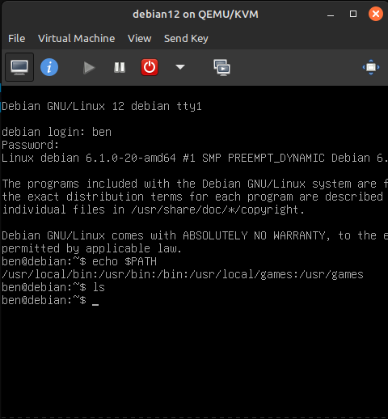

The first step in my project was of course to create a Debian-12 VM. On Linux this process was not complicated.
I used my linux machine for this project.
First, I had to make sure virt manager was installed, for which I used the following commands.
sudo apt install -y qemu-kvm libvirt-clients virt-manager
sudo apt install -y libvirt-daemon-system bridge-utils virtinst libvirt-daemon
sudo apt install -y qemu qemu-kvm qemu-system qemu-utils
sudo usermod -aG libvirt $(whoami)
sudo usermod -aG libvirt-qemu $(whoami)
Note: The last two commands utilize the $(whoami) command to get the current user. You can also just enter your username if you want!
Next, I downloaded the Debian-12 ISO by visiting debian's official website at https://www.debian.org/download and downloading the ISO.
Now that I had the ISO, I opened virt-manager by running the following command in the terminal:
virt-manager and clicked on the "Create a new virtual machine" button. From here I went through all the steps to create a new virtual machine. I won't go through all the steps here as there were quite a few and most of them were really simple, but I'll highlight a few key steps.
By the end of this process, I was able to log in and run some basic commands on my new Debian-12 virtual machine, which was a great start to my project!
